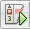

Apache NetBeans
Apache NetBeansDebugging C/C++ Projects Tutorial
Last reviewed on 2023-02-23
The following short tutorial takes you through some of the features for debugging a C or C++ project in NetBeans IDE.
Requirements
To follow this tutorial, you need the following software and resources.
| Software or Resource | Version Required |
|---|---|
NetBeans IDE |
|
Java Developer Kit (JDK) |
See the NetBeans IDE Installation Instructions and Configuring the NetBeans IDE for C/C++/Fortran for information on downloading and installing the required software.
Creating the Sample Project
The NetBeans IDE with C/C++ uses the gdb debugger and provides numerous features for debugging your projects. To explore these features, you will use the Quote project. If you have not already created this project, do the following:
-
Choose File > New Project.
-
In the project wizard, expand the Samples category and then the C/C++ subcategory.
-
Select the Applications subcategory, then select the
Quoteproject. Click Next, then click Finish.
Debugging
While NetBeans supports compilation using clang and clang, it does not currently support the clang debugger ``lldb``. However applications compiled with clang or clang can both be debugged using GDB and NetBeans. As clang is a drop in compiler replacement for GCC, it should not be necessary to compile using different flags.
One of the most common features drawn upon by developers when debugging is the breakpoint. There are several ways to create and manipulate breakpoints in NetBeans, for example by using:
-
the NetBeans debug interface on the IDE
-
the Debugger Console (Window→Debugging→Debugger Console)
-
a GDB command file
The NetBeans debug interface on the IDE
This is the most popular way to debug which we focus on here.
The Debugger Console
This provides the standard GDB interface within NetBeans and can be used to automate, store and configure debugging sessions.
A GDB Command file
A GDB configuration file is invaluable in saving more intricate debugging setups,
to supply your configuration to others or to record some interesting behaviour of
your application. The configuration file can be loaded into GDB: source
my_gdb_configration; or automatically load it when GDB is started by renaming the
GDB command file to .gdbinit.
# user friendly output
set print pretty on
# set a few breakpoints
# at the first statement
break quote.cc:24
# we can abbreviate break
b quote.cc:171
# stop at a function
b Customer.cc:Customer::GetDiscount
# stop at Customer() if initDiscout is negative
b Customer.cc:Customer if initDiscount < 0You can continue debugging using the Debugger Console or by using the IDE button and the application will stop at the set breakpoints.
Creating Breakpoints
You can create and manipulate breakpoints in your code at any time without starting a debugging session using the IDE or using a GDB command file.
Creating and Removing a Line Breakpoint
-
In the
Quote_1project, open thequote.ccfile. -
Set a line breakpoint by clicking in the left margin of the Source Editor window next to line 171 (
response = readChar("Enter disk module type: (S for single disks, R for RAID; Q - exit)", 'S');). The line is highlighted in red to indicate that the breakpoint is set.
-
You could remove the breakpoint by clicking on the icon in the left margin.
-
Choose Window > Debugging > Breakpoints to open the Breakpoints window. Your line breakpoint is listed under the C/C++ node.
-
Expand the C/C++ node to see your breakpoint.
Creating a Function Breakpoint
-
Click the Create New Breakpoint button in the left margin of the Breakpoints window or choose Debug > New Breakpoint (Ctrl+Shift+F8) to open the New Breakpoint dialog box.
-
In the Debugger Type list, select Native.
-
In the Breakpoint Type list, select Function.
-
Type the function name
Customer::GetDiscountin the Function Name text field. Click OK.
-
Your function breakpoint is set and is added to the list in the Breakpoints window.
-
Click the Select Breakpoint Groups button in the left margin to organize the breakpoints into different groups and select Type.
-
Expand the File:Line and Function groups to display your breakpoints.
Starting a Debugging Session
When you start a debugging session, the IDE starts the gdb debugger, then runs the application inside the debugger. The IDE automatically opens the debugger windows and debugger toolbar and prints debugger output to the Output window.
-
Start a debugging session for the
Quote_1project by clicking the Debug Project button  or by choosing Debug > Debug Project. The debugger starts and the application runs. The debug toolbar is displayed.
-
Open the Sessions window by choosing Window > Debugging > Sessions. The debugging session is shown in this window.
Inspecting the State of the Application
-
The
Quote_1application prompts you for input in the Output (Debug) window. -
Enter a customer name after the "Enter customer name:" prompt.
Ensure that the name you enter is exactly the same as the name you selected from the list including upper and lower case. The application stops at the Customer::GetDiscount function breakpoint you set earlier and the customer.cc file opens in the editor at the line where the funtion is called. The Breakpoints window lists the two breakpoints you set earlier. The green program counter arrow appears on top of the breakpoint icon of the function breakpoint.
-
Click the tab for the Call Stack window or choose Window > Debugging > Call Stack. The call stack shows three frames.
-
Open the Variables window and note that one variable is displayed.
-
Click the expand icons to expand the structure.
-
Click the Continue button in the toolbar. The
GetDiscountfunction is executed, printing the customer discount to the Output (Debug) window. Then you are prompted for input.
-
Enter the input in response to the prompts.
The program stops at the next breakpoint, the line breakpoint you set earlier. In the quote.cc file, the green program counter arrow appears on top of the breakpoint icon indicating the line on which the program is stopped.
-
Click the Variables tab and note the long list of variables.
-
Click the Call Stack tab and note that there is now one frame in the stack.
-
Choose Window > Debugging > Registers. The Registers window opens, displaying the current contents of the registers.
-
Choose Window > Debugging > Disassembly. The Disassembly window opens, displaying the assembly instructions for the current source file.
-
Click the Continue button in the toolbar and continue entering input in response to the prompts in the Output window until the program is completed.
-
When you press Enter to exit the program, your debug session ends. To end the debug session before the execution of the program was complete, you could click the Finish Debugger Session button in the toolbar or choose Debug > Finish Debugger Session.
See Also
Please see the C/C++ Learning Trail for more articles about developing with C/C++/Fortran in NetBeans IDE.